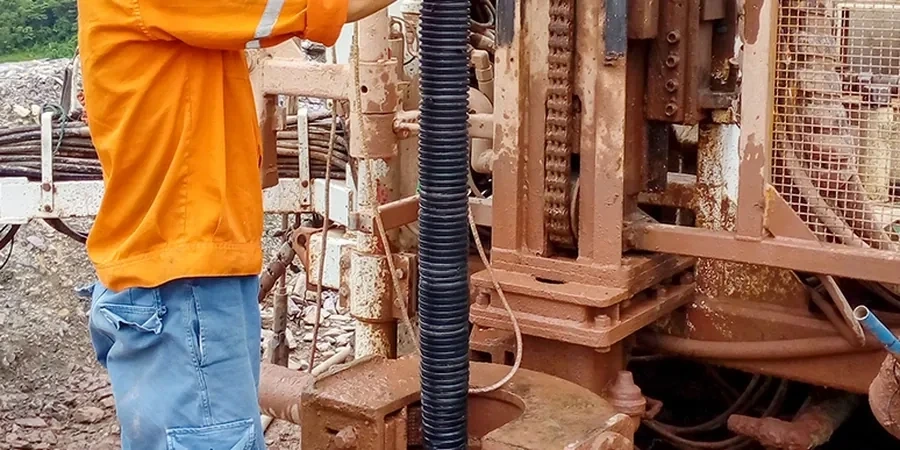

À Aix-en-Provence, notre bureau d'études géotechniques propose une gamme complète de services adaptés aux spécificités du territoire provençal. De la caractérisation des sols à la conception de fondations, en passant par la surveillance des tassements et les études de stabilité, nous accompagnons vos projets de construction avec des solutions fondées sur une connaissance approfondie du sous-sol local. Nos ingénieurs maîtrisent les enjeux géologiques de la région et utilisent des méthodes reconnues, comme le standard penetration test et la tomographie sismique, pour garantir des résultats fiables et conformes aux normes en vigueur.

Méthodologie et portée
Considérations locales
Notre équipe justifie d'une expérience régionale consolidée dans les géotechniques complexes de la Provence. Nous disposons d'un laboratoire calibré pour les essais sur sols argileux et calcaires, et nos rapports sont rédigés en conformité avec les exigences des bureaux de contrôle français (SOCOTEC, Apave, Bureau Veritas). Nous collaborons étroitement avec les collectivités locales (mairie d'Aix, Métropole Aix-Marseille) et les entreprises de travaux publics du département pour assurer une coordination efficace sur les chantiers. Notre connaissance des aléas locaux (retrait-gonflement, karst, inondations) permet d'anticiper les risques et de proposer des solutions adaptées.
Vidéo explicative
Normes applicables
Nos prestations suivent scrupuleusement le cadre normatif français. Les études géotechniques sont réalisées selon la norme NF P 94-500 (classification des missions géotechniques), les essais en place comme le SPT suivent la norme NF P 94-116, et les sondages pressiométriques respectent la norme NF P 94-110. Pour les fondations, nous appliquons l'Eurocode 7 (NF EN 1997) avec son annexe nationale française, tandis que le calcul parasismique se réfère à l'Eurocode 8 (NF EN 1998) et à l'arrêté du 22 octobre 2010. Les essais de laboratoire (cisaillement, œdomètre) sont effectués selon les normes NF correspondantes.
Consultations fréquentes
Quels sont les principaux risques géotechniques dans la région d'Aix-en-Provence ?
Les principaux risques sont le retrait-gonflement des argiles (aléa fort dans les Bouches-du-Rhône), la présence de cavités karstiques dans les secteurs calcaires (notamment sur le plateau de l'Arc), et les inondations par remontée de nappe dans la plaine de l'Arc. Le risque sismique est modéré (zone 3) et doit être pris en compte pour les bâtiments de catégorie III et IV.
Faut-il une étude géotechnique pour construire une maison individuelle à Aix-en-Provence ?
Oui, elle est fortement recommandée, voire exigée par les assurances en raison du risque de retrait-gonflement des argiles. De nombreuses communes des Bouches-du-Rhône imposent une étude géotechnique préalable pour tout permis de construire.
Quelles normes françaises régissent les études géotechniques en Provence ?
Les études sont encadrées par la norme NF P 94-500 qui définit les missions géotechniques (G1 à G5). Les essais in situ suivent les normes NF P 94-116 (SPT), NF P 94-110 (pressiomètre), NF P 94-117 (pénétromètre statique). Le calcul des fondations repose sur l'Eurocode 7 (NF EN 1997) et son annexe nationale, tandis que le volet parasismique est traité via l'Eurocode 8 (NF EN 1998).
Quels types de projets sont courants à Aix-en-Provence ?
Les projets sont variés : construction de logements collectifs et individuels, réhabilitation de bâtiments anciens (centre historique), aménagement de zones d'activités (pôle d'activités de la Duranne), ouvrages d'art (ponts, viaducs), et infrastructures de transport (Ligne à Grande Vitesse, contournement autoroutier). Les études géotechniques portent souvent sur des sols argileux ou karstiques, avec des contraintes de nappe phréatique élevée dans la plaine.